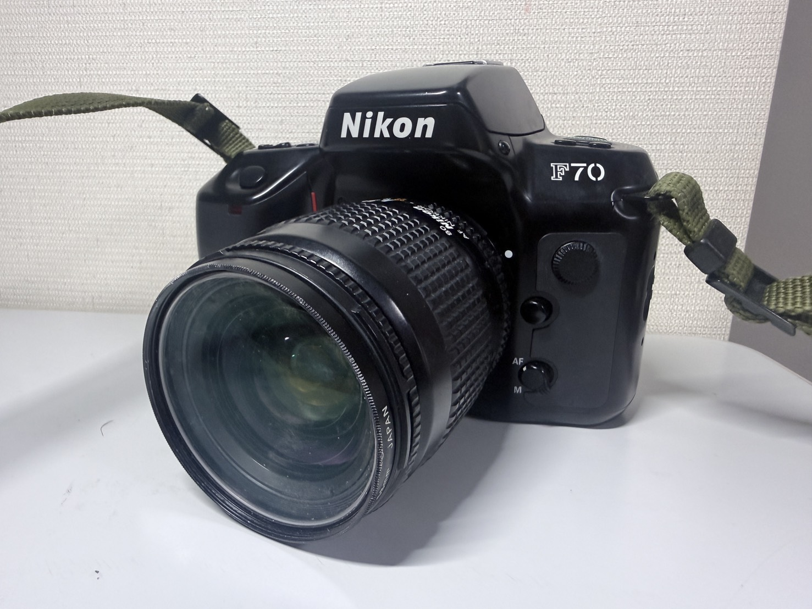
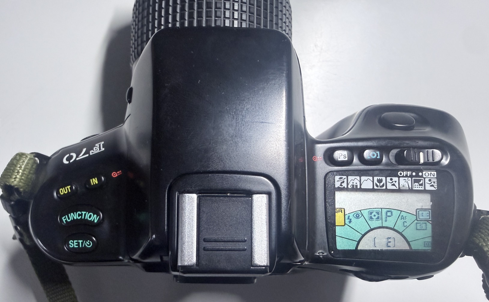
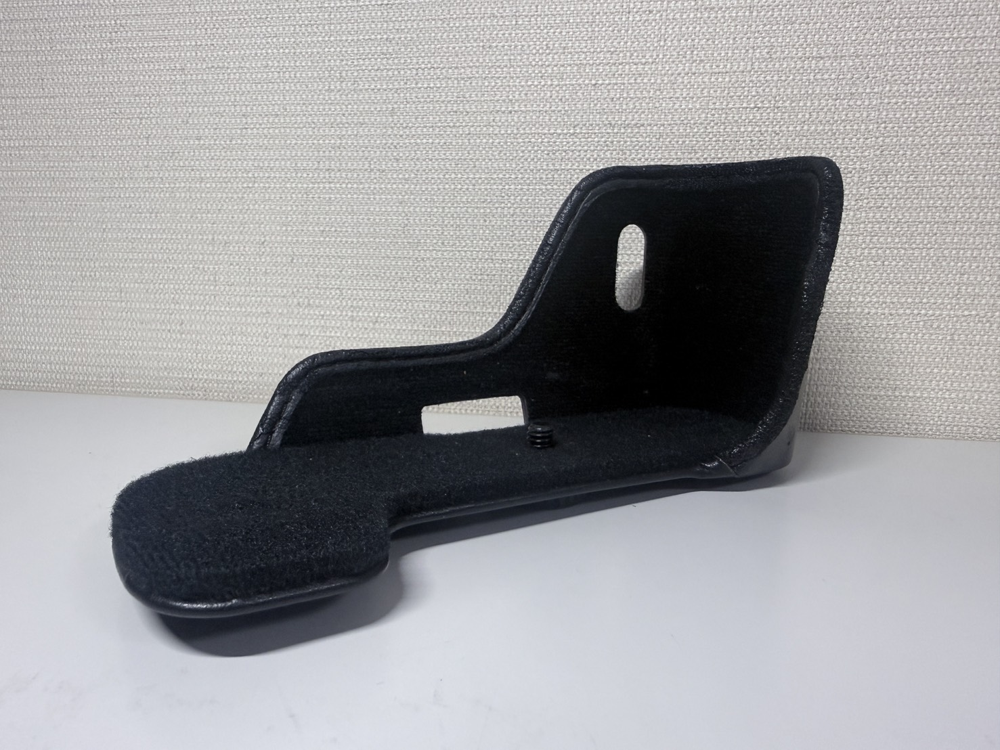
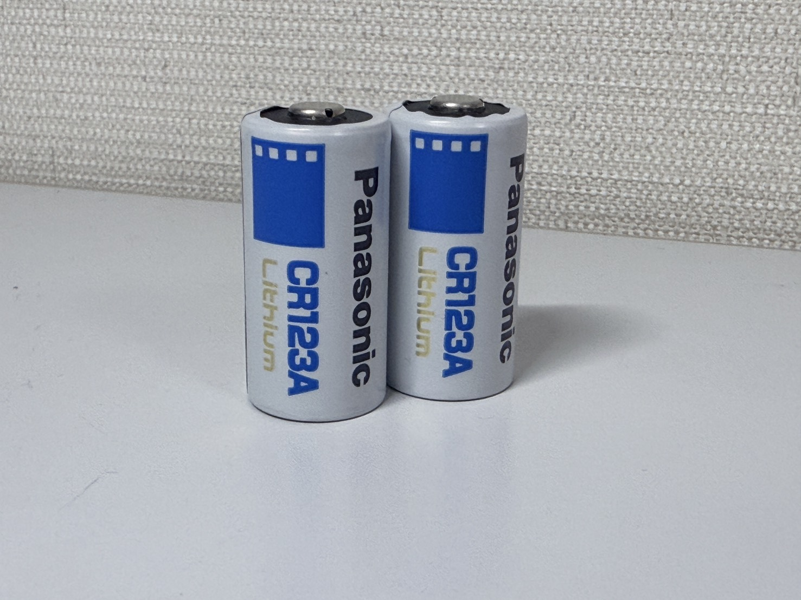

【Nicon F70D】
【そこまで酷評するものか？】
基本情報
| メーカー | 【Nicon】 |
|---|---|
| 機種名 | 【Nicon F70D】 |
| 発売年 | 【1994年】 |
| 使用フィルム | 【35mm】 |
| 撮影方式 | 【35mmフィルム一眼レフ】 |
| レンズマウント | 【Fマウント】 |
| シャッター | 電子制御上下走行式フォーカルプレーンシャッター・
P.Ps.Aモード:三十秒～1/4000 S.Mモード:bulb.30秒～1/4000（1/3段毎のデジタル制御、bulbはMのみ） |
| 露出 | 【フルモード（P・S・A・M）】 |
外観

まぁ、フィルムカメラと言いつつも、もうこの時代には今のデジタルカメラとほぼ変わらないような 見た目になっています。軍艦部も諸事情というか、このカメラを”迷機”たらしめる要素によって かなりすっきりしています。（”F70”と”F70D”の違いは疑似パノラマ機能がついてるかついてないかの差です。）
特徴
このカメラ、見た目からしてなにも変なところがないただの一般的な中級機だと思われるだろう。
実際”説明書”ではなにも問題のない”普通”なカメラです。
ですがこのカメラがおかしいのはそう言ったところではなく”操作方法”なんです。

この[FUNCTION]ボタンを押しながらダイヤルを回すことによって変えたい機能まで矢印を進め、 [SET]ボタンを押しながら再びダイヤルを回すことによって機能内の数値・設定を変更します。 で、ここまで聞いたらまぁ普通だなくらいじゃないですか。 このカメラがやばいのはその変更方法を採るのが
[AE/SBのブラケテイョン・露出補正と調光補生 ・シンクロモード・測光/露出モード・フォーカス・フィルム給送/感度設定] などなどめっちゃ使うものからほぼ使わないものまで”すべて”フラットに・全く同じ方法で変更します。
(それ以外のQR機能やセルフタイマー・フォーカスエリアなどの設定もボタンは変わりますが、 基本[ボタンを押しながらダイアルを回す]ことは変わりません。)
まぁこれを「やりずらい」と捉えるのか「全部一緒で分かりやすい」 と捉えるか人それぞれだと思いますが・・・。
で、この特徴は滅茶苦茶個人的なものなんですが、 私が初めて触ったNicon製フィルムカメラですね。 （U2とおんなじタイミングでしたが、最初に撮影したのがF70Dなんで） なので私のNicon製品観はこれ基準です。（めっちゃねじ曲がってますが・・・）
スペック
操作方法以外は全く変な所はありません。露出も[P・S・A・M・
Ps（ポートレート・スポーツ・記念写真・シルエット・風景・夜景・クローズアップ・動感）]
などなどいろんなモードがありますし、測光方式もDタイプAFニッコールレンズだと
3D‐8分割マルチパターン、それ以外でも8分割マルチパターン、中央重点測光・スポット測光
などなど基本的な装備は平気で積んでます。
フィルム感度設定もDXコードによる自動認識からユーザー設定に6～6400まで対応と
なんで基本的なフィルムは全部使えますし、基本このカメラで困ることとかって
ほんとに操作方法以外ないんですよね。
なのでもったいないなぁ・・・。って感じなんですよね。
実際に使ってみて
私は2026年の8/14日に父方の祖母の実家の墓参りに岡崎まで家族と一緒に行ってきたのでその時に使いました。
使用フィルムはFUJI NEOPAN 100 ACROSです（期限切れ）
使用レンズはNicon AF NIKKOR 28-80mm 1:3.5-5.6D。
（家族での奴なので写真が少なめです。）

まずは空。AFで撮ったのですがばっちり絞りが効いているのがわかりますね。
いやぁ・・・。モノクロっていいですねぇ。

この写真、車の中から・移動しながら撮ったのですが、これでもきっちりピントが合ってますね。

これは帰りに寄った刈谷インターチェンジの写真ですね。
ちょっとスナップショットぽく撮ってきました。
（パノラマに切り替えてそのまま忘れて撮ってるので、パノラマになってるのはミスです）

これも同じですね。こういった写真はカラーよりもモノクロのほうが締まって感じます。

これは疑似パノラマを使ってみたカットです。
意外にもいい感じですよね。
撮影について
撮影に関して特に不満に思うことはありませんでした。（AFの場合） ですがネットで見た感じ、MFだとやっぱり不満タラタラらしいです。 まぁあんな操作方法してたらそりゃそうだと思いますが。
入手について
このカメラ、貰い物（厳密に言うと借り物）なんですよね。(2026/8~入手)
高校の写真部のロッカーになんかフィルム時代の遺物が転がってないかぁって探したら見つけた代物なんですよね。
なので異質な入手方法ですね。もしかしたら卒業時に返還するのかなぁ・・・。（どうせそうだろ）
あとは時代にしては珍しく、革カバーの基礎部分だけなぜか取り付けっぱなしでした。

（いちいち取るのめんどいはわかるけどさ・・・）
金額とか
上記の方法で入手してのでゼロ円・・・と言いたいところですが、電池代として1600～くらい持ってかれました。
パナソニック高すぎやろ・・・。

現在の状態
一切の問題がない。すべて完動である。
まとめ
個人的にはそこまで批判されるものなのかなぁ？って印象です。
良くも悪くもすべてがフラットなので一発で操作方法覚えられますし、
へんにごちゃごちゃしてるカメラよりは格段に使いやすい印象です。
初心者にも扱いやすいカメラだと思いますから、ぜひぜひ触ってみたください。
（このF70Dは公式より取扱説明書が公開されている。もし時間があるなら読み込んでおいて
損はないと思う）
公式が無料公開している説明書はこちらから